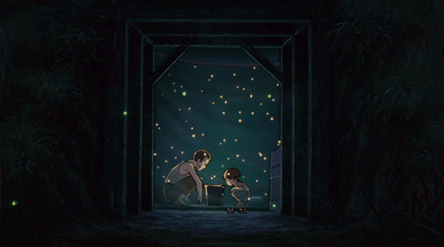
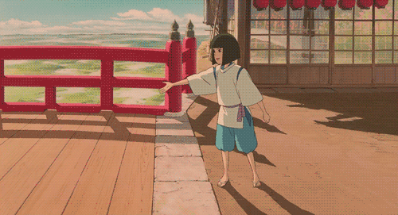
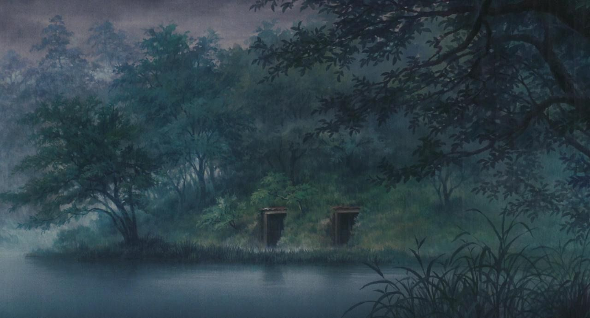
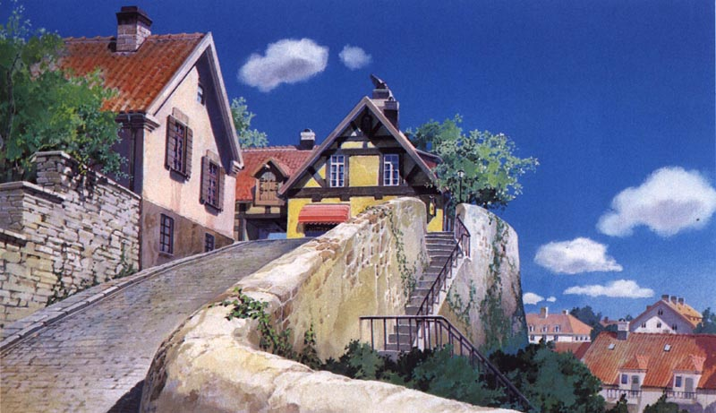
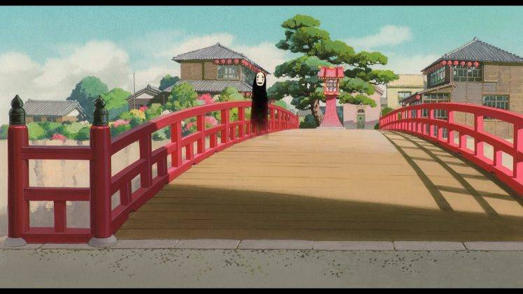

logo
this is what a paragraph looks like
this is a link
this my color scheme.
color info here
color info here
color info here
movies
Grave of the Fireflies, Nausiccå Of The Valley Of The Wind, Ponyo, Spirited Away, When Marnie Was There, kikis deilivery servace
logo
gifs
Fireflies
kiki

Marnie

Ponyo

Spirit
backgrounds
Fireflies
kiki
Marnie

Ponyo

Spirit
